2025 National 5 Chemistry marking instructions
Source: Scottish Qualifications Authority (SQA) / Qualifications Scotland. This is a StemInteract HTML companion, not an official HTML edition. Selectable text is supplied alongside original page images. Use the images or original PDF for equations, powers, fractions, vector notation, tables and diagrams; text extraction cannot fully preserve mathematical layout.
Jump to a question
PDF page 1
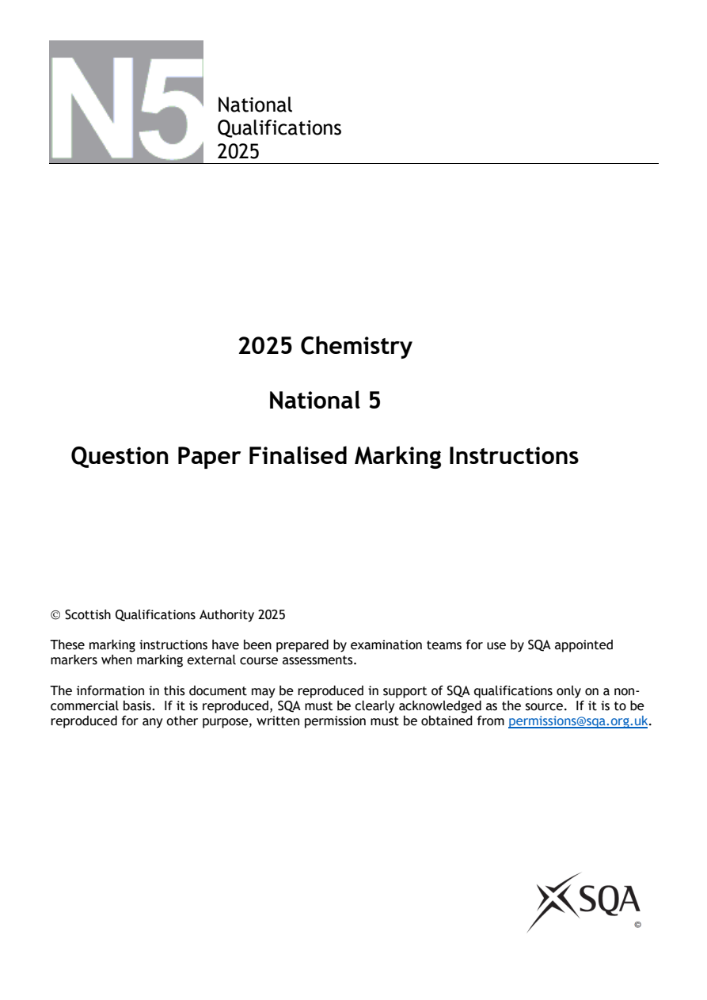
Selectable page text
National
Qualifications
2025
2025 Chemistry
National 5
Question Paper Finalised Marking Instructions
© Scottish Qualifications Authority 2025
These marking instructions have been prepared by examination teams for use by SQA appointed
markers when marking external course assessments.
The information in this document may be reproduced in support of SQA qualifications only on a non-
commercial basis. If it is reproduced, SQA must be clearly acknowledged as the source. If it is to be
reproduced for any other purpose, written permission must be obtained from permissions@sqa.org.uk.PDF page 2
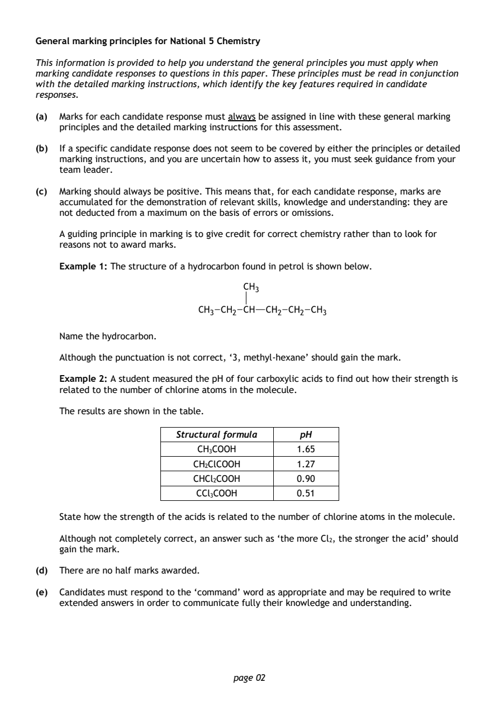
Selectable page text
General marking principles for National 5 Chemistry
This information is provided to help you understand the general principles you must apply when
marking candidate responses to questions in this paper. These principles must be read in conjunction
with the detailed marking instructions, which identify the key features required in candidate
responses.
(a) Marks for each candidate response must always be assigned in line with these general marking
principles and the detailed marking instructions for this assessment.
(b) If a specific candidate response does not seem to be covered by either the principles or detailed
marking instructions, and you are uncertain how to assess it, you must seek guidance from your
team leader.
(c) Marking should always be positive. This means that, for each candidate response, marks are
accumulated for the demonstration of relevant skills, knowledge and understanding: they are
not deducted from a maximum on the basis of errors or omissions.
A guiding principle in marking is to give credit for correct chemistry rather than to look for
reasons not to award marks.
Example 1: The structure of a hydrocarbon found in petrol is shown below.
Name the hydrocarbon.
Although the punctuation is not correct, ‘3, methyl-hexane’ should gain the mark.
Example 2: A student measured the pH of four carboxylic acids to find out how their strength is
related to the number of chlorine atoms in the molecule.
The results are shown in the table.
Structural formula pH
CH₃COOH 1.65
CH₂ClCOOH 1.27
CHCl₂COOH 0.90
CCl₃COOH 0.51
State how the strength of the acids is related to the number of chlorine atoms in the molecule.
Although not completely correct, an answer such as ‘the more Cl₂, the stronger the acid’ should
gain the mark.
(d) There are no half marks awarded.
(e) Candidates must respond to the ‘command’ word as appropriate and may be required to write
extended answers in order to communicate fully their knowledge and understanding.
page 02PDF page 3
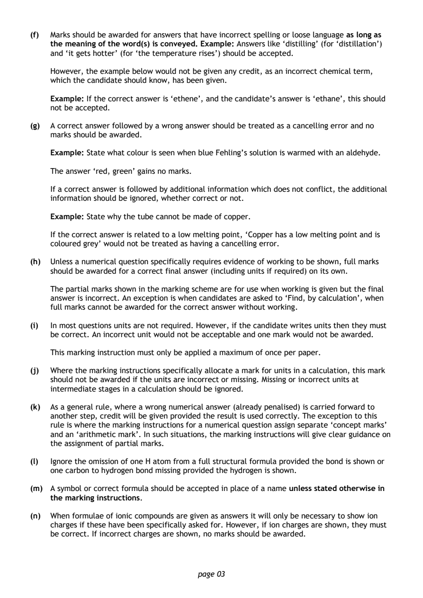
Selectable page text
(f) Marks should be awarded for answers that have incorrect spelling or loose language as long as
the meaning of the word(s) is conveyed. Example: Answers like ‘distilling’ (for ‘distillation’)
and ‘it gets hotter’ (for ‘the temperature rises’) should be accepted.
However, the example below would not be given any credit, as an incorrect chemical term,
which the candidate should know, has been given.
Example: If the correct answer is ‘ethene’, and the candidate’s answer is ‘ethane’, this should
not be accepted.
(g) A correct answer followed by a wrong answer should be treated as a cancelling error and no
marks should be awarded.
Example: State what colour is seen when blue Fehling’s solution is warmed with an aldehyde.
The answer ‘red, green’ gains no marks.
If a correct answer is followed by additional information which does not conflict, the additional
information should be ignored, whether correct or not.
Example: State why the tube cannot be made of copper.
If the correct answer is related to a low melting point, ‘Copper has a low melting point and is
coloured grey’ would not be treated as having a cancelling error.
(h) Unless a numerical question specifically requires evidence of working to be shown, full marks
should be awarded for a correct final answer (including units if required) on its own.
The partial marks shown in the marking scheme are for use when working is given but the final
answer is incorrect. An exception is when candidates are asked to ‘Find, by calculation’, when
full marks cannot be awarded for the correct answer without working.
(i) In most questions units are not required. However, if the candidate writes units then they must
be correct. An incorrect unit would not be acceptable and one mark would not be awarded.
This marking instruction must only be applied a maximum of once per paper.
(j) Where the marking instructions specifically allocate a mark for units in a calculation, this mark
should not be awarded if the units are incorrect or missing. Missing or incorrect units at
intermediate stages in a calculation should be ignored.
(k) As a general rule, where a wrong numerical answer (already penalised) is carried forward to
another step, credit will be given provided the result is used correctly. The exception to this
rule is where the marking instructions for a numerical question assign separate ‘concept marks’
and an ‘arithmetic mark’. In such situations, the marking instructions will give clear guidance on
the assignment of partial marks.
(l) Ignore the omission of one H atom from a full structural formula provided the bond is shown or
one carbon to hydrogen bond missing provided the hydrogen is shown.
(m) A symbol or correct formula should be accepted in place of a name unless stated otherwise in
the marking instructions.
(n) When formulae of ionic compounds are given as answers it will only be necessary to show ion
charges if these have been specifically asked for. However, if ion charges are shown, they must
be correct. If incorrect charges are shown, no marks should be awarded.
page 03PDF page 4
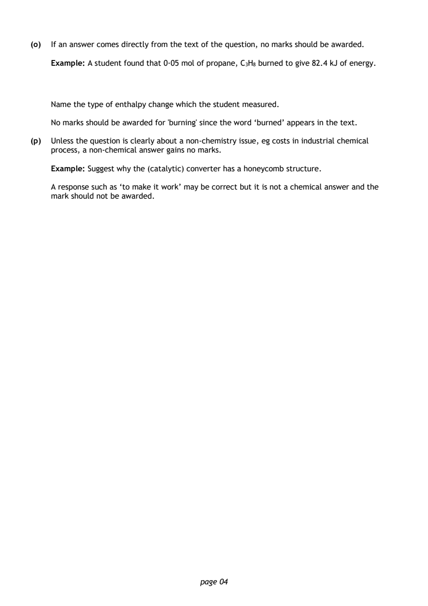
Selectable page text
(o) If an answer comes directly from the text of the question, no marks should be awarded.
Example: A student found that 0·05 mol of propane, C₃H₈ burned to give 82.4 kJ of energy.
Name the type of enthalpy change which the student measured.
No marks should be awarded for 'burning' since the word ‘burned’ appears in the text.
(p) Unless the question is clearly about a non-chemistry issue, eg costs in industrial chemical
process, a non-chemical answer gains no marks.
Example: Suggest why the (catalytic) converter has a honeycomb structure.
A response such as ‘to make it work’ may be correct but it is not a chemical answer and the
mark should not be awarded.
page 04PDF page 5
Paper 1, Question 1Paper 1, Question 2Paper 1, Question 3Paper 1, Question 4Paper 1, Question 5Paper 1, Question 6Paper 1, Question 7Paper 1, Question 8Paper 1, Question 9Paper 1, Question 10Paper 1, Question 11Paper 1, Question 12Paper 1, Question 13Paper 1, Question 14Paper 1, Question 15Paper 1, Question 16Paper 1, Question 17Paper 1, Question 18Paper 1, Question 19Paper 1, Question 20Paper 1, Question 21Paper 1, Question 22Paper 1, Question 23Paper 1, Question 24Paper 1, Question 25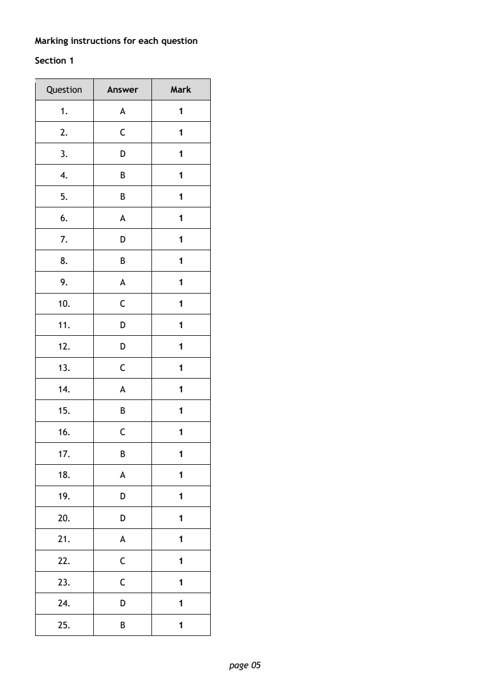
Selectable page text
Marking instructions for each question
Section 1
Question Answer Mark
1. A 1
2. C 1
3. D 1
4. B 1
5. B 1
6. A 1
7. D 1
8. B 1
9. A 1
10. C 1
11. D 1
12. D 1
13. C 1
14. A 1
15. B 1
16. C 1
17. B 1
18. A 1
19. D 1
20. D 1
21. A 1
22. C 1
23. C 1
24. D 1
25. B 1
page 05PDF page 6
Paper 2, Question 1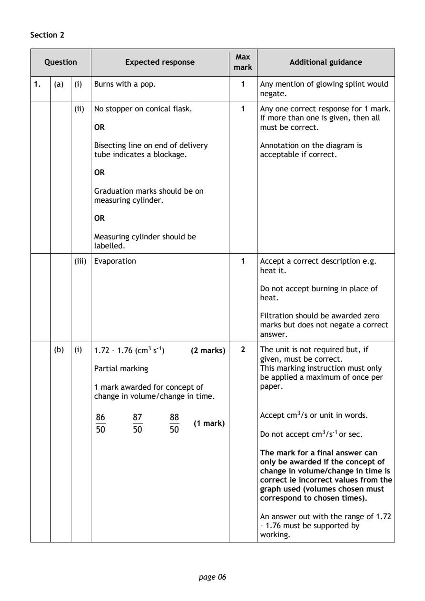
Selectable page text
Section 2
Max
Question Expected response Additional guidance
mark
1. (a) (i) Burns with a pop. 1 Any mention of glowing splint would
negate.
(ii) No stopper on conical flask. 1 Any one correct response for 1 mark.
If more than one is given, then all
OR must be correct.
Bisecting line on end of delivery Annotation on the diagram is
tube indicates a blockage. acceptable if correct.
OR
Graduation marks should be on
measuring cylinder.
OR
Measuring cylinder should be
labelled.
(iii) Evaporation 1 Accept a correct description e.g.
heat it.
Do not accept burning in place of
heat.
Filtration should be awarded zero
marks but does not negate a correct
answer.
(b) (i) 1.72 - 1.76 (cm³ s⁻¹) (2 marks) 2 The unit is not required but, if
given, must be correct.
Partial marking This marking instruction must only
be applied a maximum of once per
1 mark awarded for concept of paper.
change in volume/change in time.
86 87 88 Accept cm³/s or unit in words.
(1 mark)
50 50 50
Do not accept cm³/s⁻¹ or sec.
The mark for a final answer can
only be awarded if the concept of
change in volume/change in time is
correct ie incorrect values from the
graph used (volumes chosen must
correspond to chosen times).
An answer out with the range of 1.72
- 1.76 must be supported by
working.
page 06PDF page 7
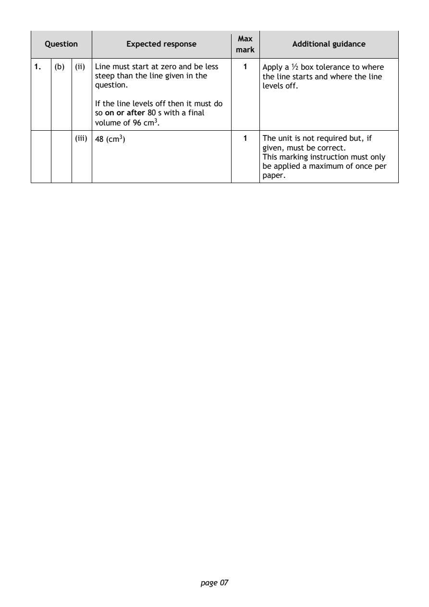
Selectable page text
Max
Question Expected response Additional guidance
mark
1. (b) (ii) Line must start at zero and be less 1 Apply a ½ box tolerance to where
steep than the line given in the the line starts and where the line
question. levels off.
If the line levels off then it must do
so on or after 80 s with a final
volume of 96 cm³.
(iii) 48 (cm³) 1 The unit is not required but, if
given, must be correct.
This marking instruction must only
be applied a maximum of once per
paper.
page 07PDF page 8
Paper 2, Question 2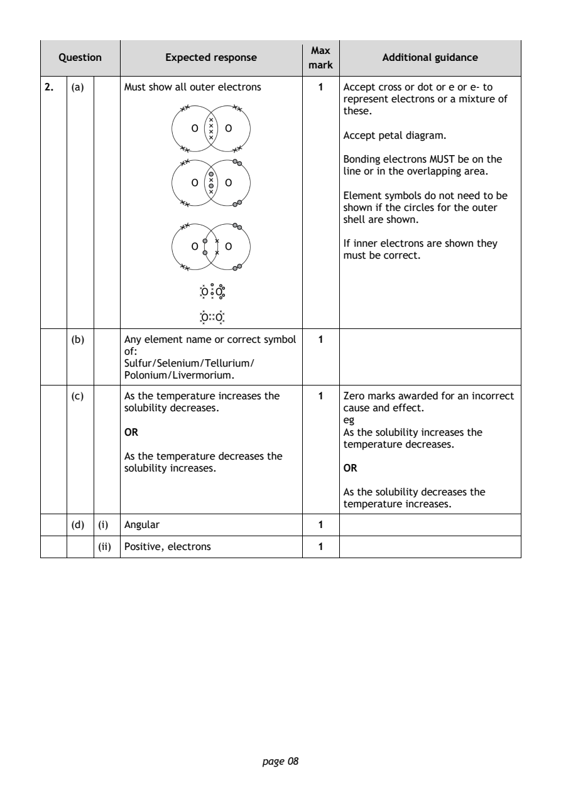
Selectable page text
Max
Question Expected response Additional guidance
mark
2. (a) Must show all outer electrons 1 Accept cross or dot or e or e- to
represent electrons or a mixture of
these.
Accept petal diagram.
Bonding electrons MUST be on the
line or in the overlapping area.
Element symbols do not need to be
shown if the circles for the outer
shell are shown.
If inner electrons are shown they
must be correct.
(b) Any element name or correct symbol 1
of:
Sulfur/Selenium/Tellurium/
Polonium/Livermorium.
(c) As the temperature increases the 1 Zero marks awarded for an incorrect
solubility decreases. cause and effect.
eg
OR As the solubility increases the
temperature decreases.
As the temperature decreases the
solubility increases. OR
As the solubility decreases the
temperature increases.
(d) (i) Angular 1
(ii) Positive, electrons 1
page 08PDF page 9
Paper 2, Question 3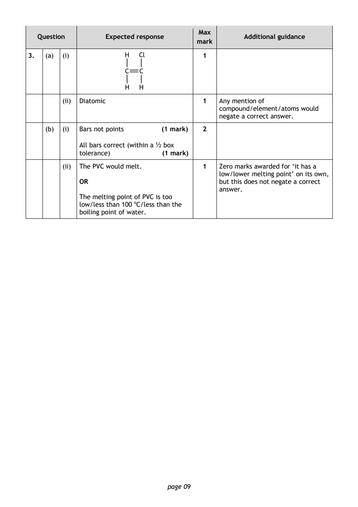
Selectable page text
Max
Question Expected response Additional guidance
mark
3. (a) (i) 1
(ii) Diatomic 1 Any mention of
compound/element/atoms would
negate a correct answer.
(b) (i) Bars not points (1 mark) 2
All bars correct (within a ½ box
tolerance) (1 mark)
(ii) The PVC would melt. 1 Zero marks awarded for ‘it has a
low/lower melting point’ on its own,
OR but this does not negate a correct
answer.
The melting point of PVC is too
low/less than 100 ^{o}C/less than the
boiling point of water.
page 09PDF page 10
Paper 2, Question 4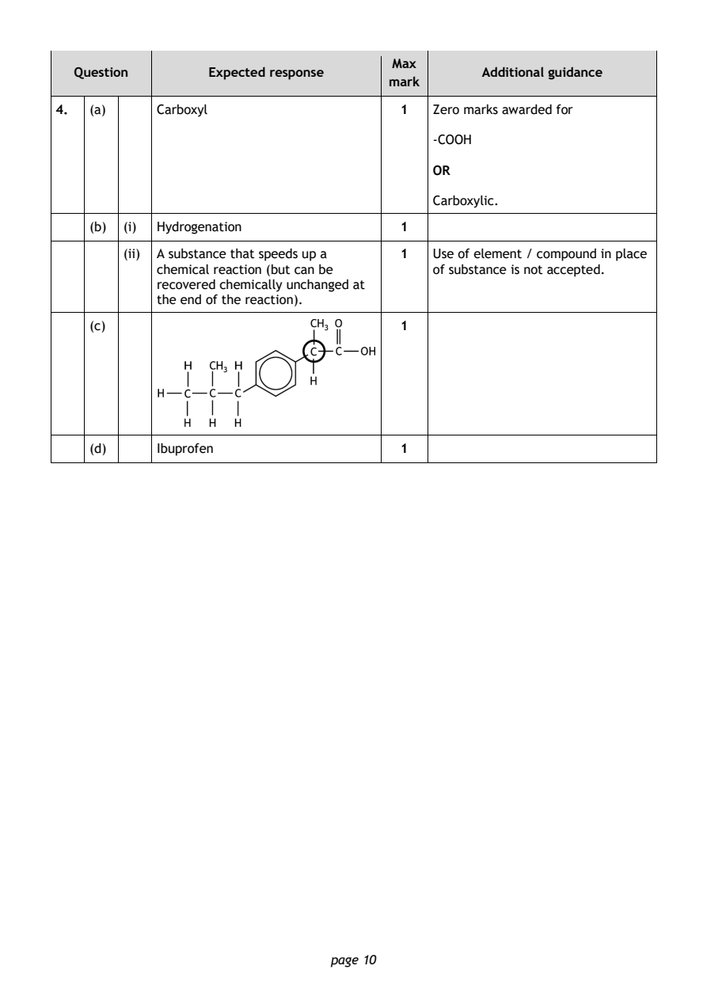
Selectable page text
Max
Question Expected response Additional guidance
mark
4. (a) Carboxyl 1 Zero marks awarded for
-COOH
OR
Carboxylic.
(b) (i) Hydrogenation 1
(ii) A substance that speeds up a 1 Use of element / compound in place
chemical reaction (but can be of substance is not accepted.
recovered chemically unchanged at
the end of the reaction).
(c) 1
(d) Ibuprofen 1
page 10PDF page 11
Paper 2, Question 5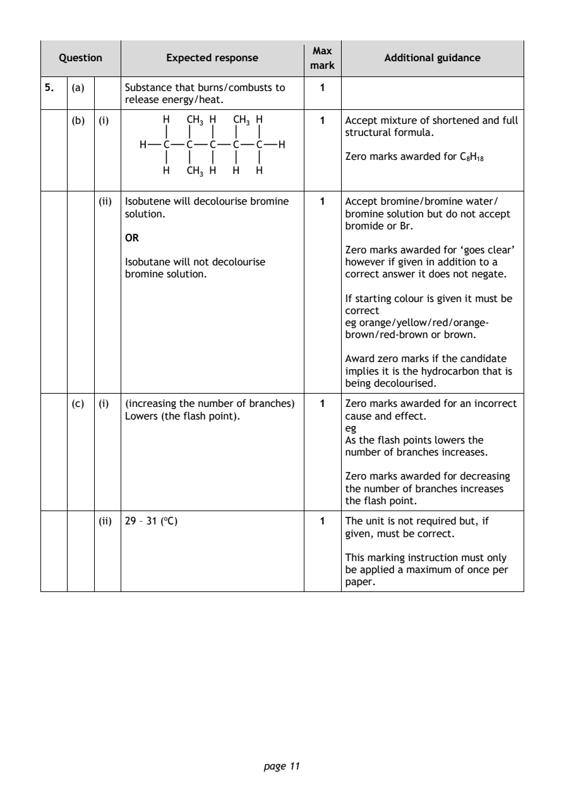
Selectable page text
Max
Question Expected response Additional guidance
mark
5. (a) Substance that burns/combusts to 1
release energy/heat.
(b) (i) 1 Accept mixture of shortened and full
structural formula.
Zero marks awarded for C₈H₁
8
(ii) Isobutene will decolourise bromine 1 Accept bromine/bromine water/
solution. bromine solution but do not accept
bromide or Br.
OR
Zero marks awarded for ‘goes clear’
Isobutane will not decolourise however if given in addition to a
bromine solution. correct answer it does not negate.
If starting colour is given it must be
correct
eg orange/yellow/red/orange-
brown/red-brown or brown.
Award zero marks if the candidate
implies it is the hydrocarbon that is
being decolourised.
(c) (i) (increasing the number of branches) 1 Zero marks awarded for an incorrect
Lowers (the flash point). cause and effect.
eg
As the flash points lowers the
number of branches increases.
Zero marks awarded for decreasing
the number of branches increases
the flash point.
(ii) 29 – 31 (^{o}C) 1 The unit is not required but, if
given, must be correct.
This marking instruction must only
be applied a maximum of once per
paper.
page 11PDF page 12
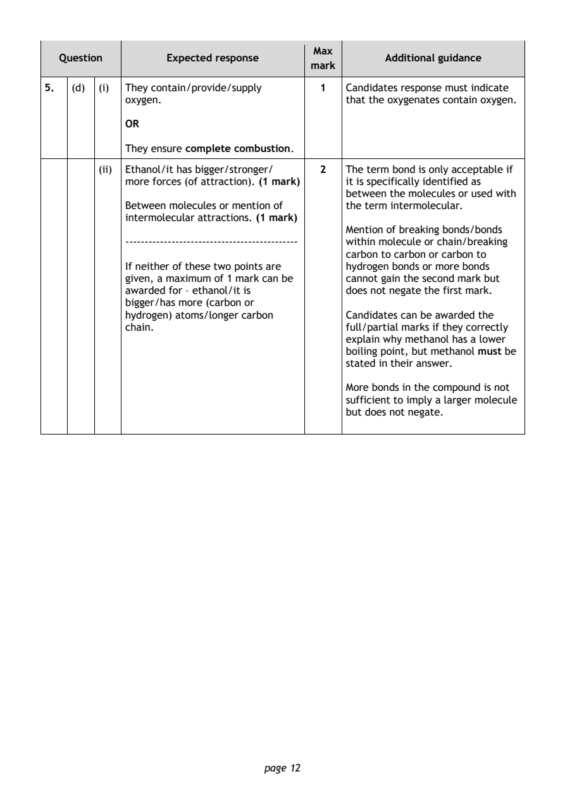
Selectable page text
Max
Question Expected response Additional guidance
mark
5. (d) (i) They contain/provide/supply 1 Candidates response must indicate
oxygen. that the oxygenates contain oxygen.
OR
They ensure complete combustion.
(ii) Ethanol/it has bigger/stronger/ 2 The term bond is only acceptable if
more forces (of attraction). (1 mark) it is specifically identified as
between the molecules or used with
Between molecules or mention of the term intermolecular.
intermolecular attractions. (1 mark)
Mention of breaking bonds/bonds
--------------------------------------------- within molecule or chain/breaking
carbon to carbon or carbon to
If neither of these two points are hydrogen bonds or more bonds
given, a maximum of 1 mark can be cannot gain the second mark but
awarded for – ethanol/it is does not negate the first mark.
bigger/has more (carbon or
hydrogen) atoms/longer carbon Candidates can be awarded the
chain. full/partial marks if they correctly
explain why methanol has a lower
boiling point, but methanol must be
stated in their answer.
More bonds in the compound is not
sufficient to imply a larger molecule
but does not negate.
page 12PDF page 13
Paper 2, Question 6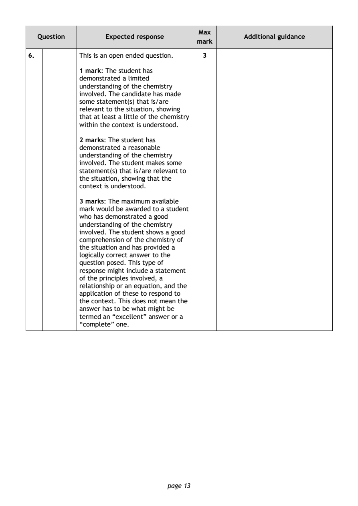
Selectable page text
Max
Question Expected response Additional guidance
mark
6. This is an open ended question. 3
1 mark: The student has
demonstrated a limited
understanding of the chemistry
involved. The candidate has made
some statement(s) that is/are
relevant to the situation, showing
that at least a little of the chemistry
within the context is understood.
2 marks: The student has
demonstrated a reasonable
understanding of the chemistry
involved. The student makes some
statement(s) that is/are relevant to
the situation, showing that the
context is understood.
3 marks: The maximum available
mark would be awarded to a student
who has demonstrated a good
understanding of the chemistry
involved. The student shows a good
comprehension of the chemistry of
the situation and has provided a
logically correct answer to the
question posed. This type of
response might include a statement
of the principles involved, a
relationship or an equation, and the
application of these to respond to
the context. This does not mean the
answer has to be what might be
termed an “excellent” answer or a
“complete” one.
page 13PDF page 14
Paper 2, Question 7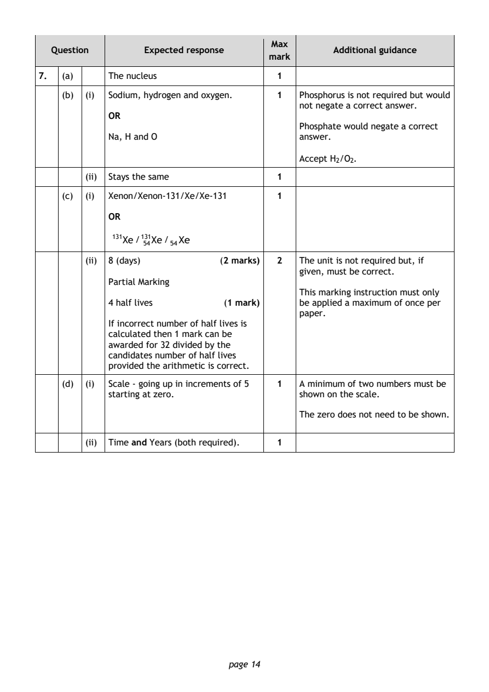
Selectable page text
Max
Question Expected response Additional guidance
mark
7. (a) The nucleus 1
(b) (i) Sodium, hydrogen and oxygen. 1 Phosphorus is not required but would
not negate a correct answer.
OR
Phosphate would negate a correct
Na, H and O answer.
Accept H₂/O₂.
(ii) Stays the same 1
(c) (i) Xenon/Xenon-131/Xe/Xe-131 1
OR
131Xe/¹₅³₄¹Xe/₅₄Xe
(ii) 8 (days) (2 marks) 2 The unit is not required but, if
given, must be correct.
Partial Marking
This marking instruction must only
4 half lives (1 mark) be applied a maximum of once per
paper.
If incorrect number of half lives is
calculated then 1 mark can be
awarded for 32 divided by the
candidates number of half lives
provided the arithmetic is correct.
(d) (i) Scale - going up in increments of 5 1 A minimum of two numbers must be
starting at zero. shown on the scale.
The zero does not need to be shown.
(ii) Time and Years (both required). 1
page 14PDF page 15
Paper 2, Question 8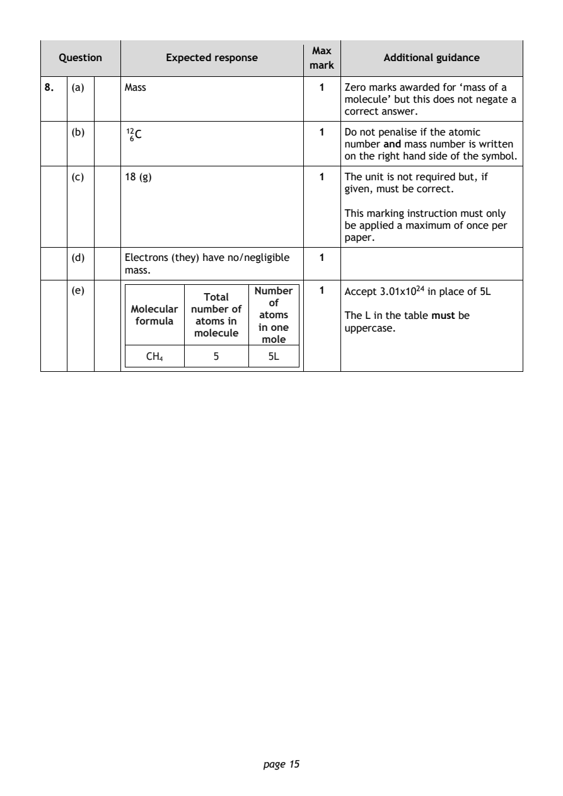
Selectable page text
Max
Question Expected response Additional guidance
mark
8. (a) Mass 1 Zero marks awarded for ‘mass of a
molecule’ but this does not negate a
correct answer.
(b) 12C 1 Do not penalise if the atomic
6
number and mass number is written
on the right hand side of the symbol.
(c) 18 (g) 1 The unit is not required but, if
given, must be correct.
This marking instruction must only
be applied a maximum of once per
paper.
(d) Electrons (they) have no/negligible 1
mass.
(e) Number 1 Accept 3.01x10²⁴ in place of 5L
Total
of
Molecular number of
atoms The L in the table must be
formula atoms in
in one uppercase.
molecule
mole
CH₄ 5 5L
page 15PDF page 16
Paper 2, Question 9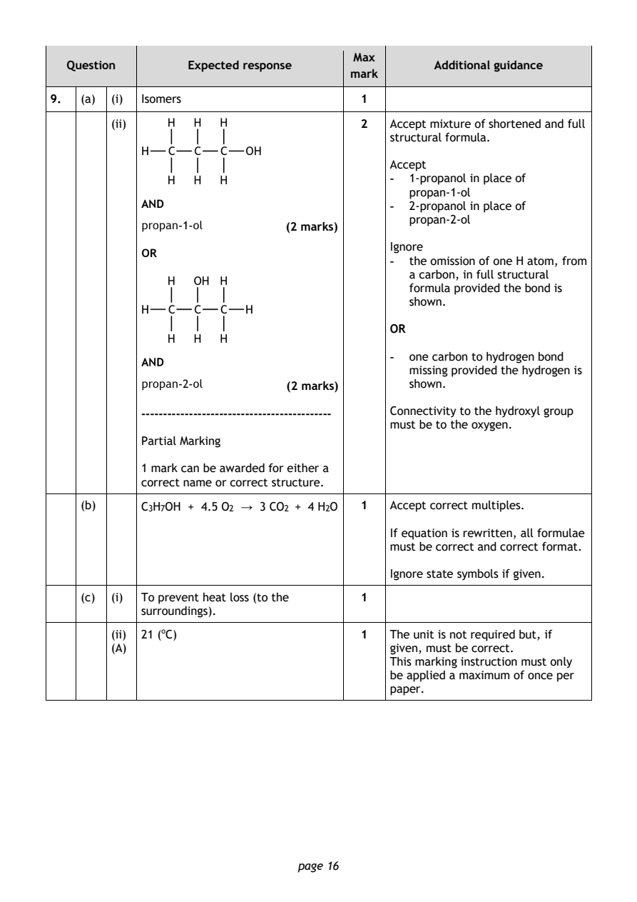
Selectable page text
Max
Question Expected response Additional guidance
mark
9. (a) (i) Isomers 1
(ii) 2 Accept mixture of shortened and full
structural formula.
Accept
- 1-propanol in place of
propan-1-ol
- 2-propanol in place of
propan-2-ol
(2 marks)
Ignore
- the omission of one H atom, from
a carbon, in full structural
formula provided the bond is
shown.
OR
- one carbon to hydrogen bond
missing provided the hydrogen is
(2 marks) shown.
-------------------------------------------- Connectivity to the hydroxyl group
must be to the oxygen.
Partial Marking
1 mark can be awarded for either a
correct name or correct structure.
(b) C₃H₇OH + 4.5 O₂ → 3 CO₂ + 4 H₂O 1 Accept correct multiples.
If equation is rewritten, all formulae
must be correct and correct format.
Ignore state symbols if given.
(c) (i) To prevent heat loss (to the 1
surroundings).
(ii) 21 (^{o}C) 1 The unit is not required but, if
(A) given, must be correct.
This marking instruction must only
be applied a maximum of once per
paper.
page 16PDF page 17
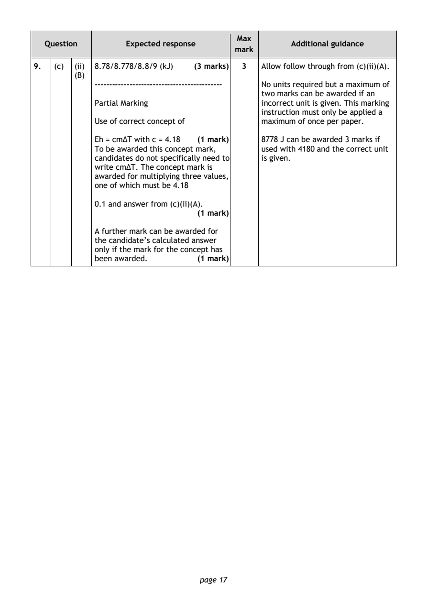
Selectable page text
Max
Question Expected response Additional guidance
mark
9. (c) (ii) 8.78/8.778/8.8/9 (kJ) (3 marks) 3 Allow follow through from (c)(ii)(A).
(B)
-------------------------------------------- No units required but a maximum of
two marks can be awarded if an
Partial Marking incorrect unit is given. This marking
instruction must only be applied a
Use of correct concept of maximum of once per paper.
Eh = cmΔT with c = 4.18 (1 mark) 8778 J can be awarded 3 marks if
To be awarded this concept mark, used with 4180 and the correct unit
candidates do not specifically need to is given.
write cmΔT. The concept mark is
awarded for multiplying three values,
one of which must be 4.18
0.1 and answer from (c)(ii)(A).
(1 mark)
A further mark can be awarded for
the candidate’s calculated answer
only if the mark for the concept has
been awarded. (1 mark)
page 17PDF page 18
Paper 2, Question 10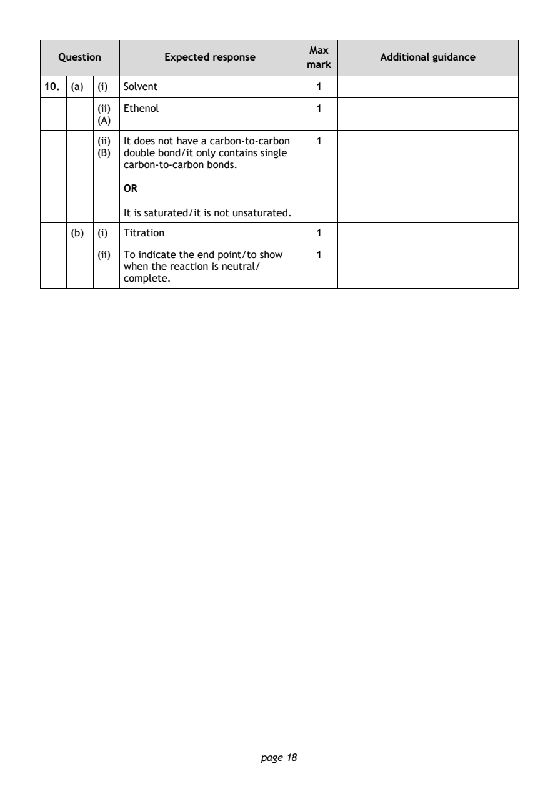
Selectable page text
Max
Question Expected response Additional guidance
mark
10. (a) (i) Solvent 1
(ii) Ethenol 1
(A)
(ii) It does not have a carbon-to-carbon 1
(B) double bond/it only contains single
carbon-to-carbon bonds.
OR
It is saturated/it is not unsaturated.
(b) (i) Titration 1
(ii) To indicate the end point/to show 1
when the reaction is neutral/
complete.
page 18PDF page 19
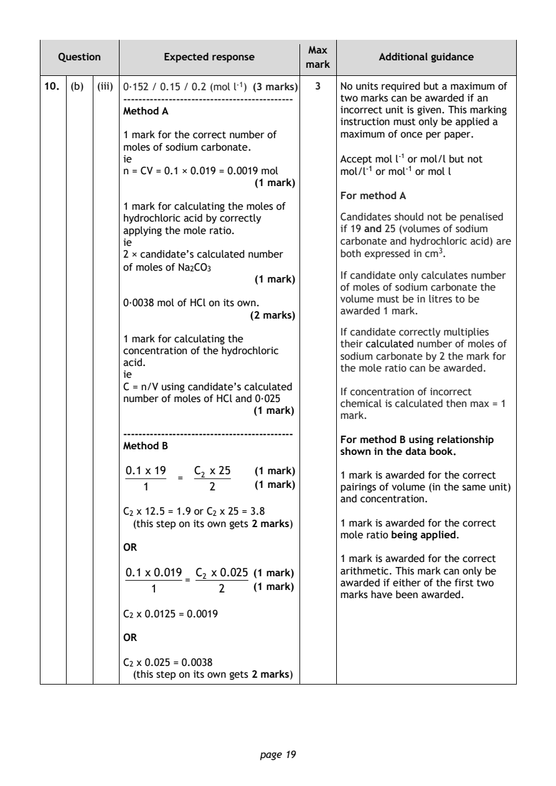
Selectable page text
Max
Question Expected response Additional guidance
mark
10. (b) (iii) 0·152 / 0.15 / 0.2 (mol l⁻¹) (3 marks) 3 No units required but a maximum of
--------------------------------------------- two marks can be awarded if an
Method A incorrect unit is given. This marking
instruction must only be applied a
1 mark for the correct number of maximum of once per paper.
moles of sodium carbonate.
ie Accept mol l⁻¹ or mol/l but not
n = CV = 0.1 × 0.019 = 0.0019 mol mol/l⁻¹ or mol⁻¹ or mol l
(1 mark)
For method A
1 mark for calculating the moles of
hydrochloric acid by correctly Candidates should not be penalised
applying the mole ratio. if 19 and 25 (volumes of sodium
ie carbonate and hydrochloric acid) are
2 × candidate’s calculated number both expressed in cm³.
of moles of Na₂CO₃
If candidate only calculates number
(1 mark)
of moles of sodium carbonate the
volume must be in litres to be
0·0038 mol of HCl on its own.
awarded 1 mark.
(2 marks)
If candidate correctly multiplies
1 mark for calculating the
their calculated number of moles of
concentration of the hydrochloric
sodium carbonate by 2 the mark for
acid.
the mole ratio can be awarded.
ie
C = n/V using candidate’s calculated
If concentration of incorrect
number of moles of HCl and 0·025
chemical is calculated then max = 1
(1 mark)
mark.
---------------------------------------------
For method B using relationship
Method B
shown in the data book.
0.1 x 19 C₂ x 25 (1 mark)
= 1 mark is awarded for the correct
1 2 (1 mark) pairings of volume (in the same unit)
and concentration.
C₂ x 12.5 = 1.9 or C₂ x 25 = 3.8
(this step on its own gets 2 marks) 1 mark is awarded for the correct
mole ratio being applied.
OR
1 mark is awarded for the correct
0.1 x 0.019 C₂ x 0.025 (1 mark) arithmetic. This mark can only be
= awarded if either of the first two
1 2 (1 mark)
marks have been awarded.
C₂ x 0.0125 = 0.0019
OR
C₂ x 0.025 = 0.0038
(this step on its own gets 2 marks)
page 19PDF page 20
Paper 2, Question 11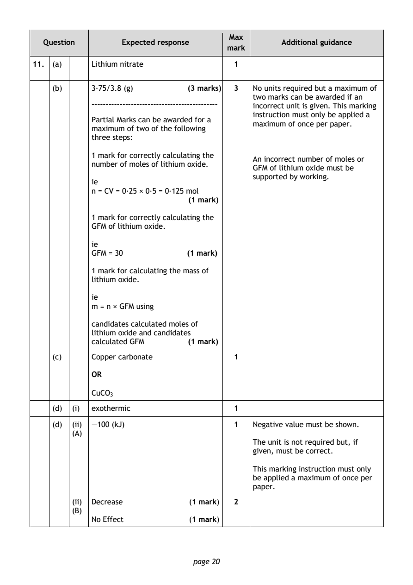
Selectable page text
Max
Question Expected response Additional guidance
mark
11. (a) Lithium nitrate 1
(b) 3·75/3.8 (g) (3 marks) 3 No units required but a maximum of
two marks can be awarded if an
--------------------------------------------- incorrect unit is given. This marking
instruction must only be applied a
Partial Marks can be awarded for a
maximum of once per paper.
maximum of two of the following
three steps:
1 mark for correctly calculating the
An incorrect number of moles or
number of moles of lithium oxide.
GFM of lithium oxide must be
supported by working.
ie
n = CV = 0·25 × 0·5 = 0·125 mol
(1 mark)
1 mark for correctly calculating the
GFM of lithium oxide.
ie
GFM = 30 (1 mark)
1 mark for calculating the mass of
lithium oxide.
ie
m = n × GFM using
candidates calculated moles of
lithium oxide and candidates
calculated GFM (1 mark)
(c) Copper carbonate 1
OR
CuCO₃
(d) (i) exothermic 1
(d) (ii) —100 (kJ) 1 Negative value must be shown.
(A)
The unit is not required but, if
given, must be correct.
This marking instruction must only
be applied a maximum of once per
paper.
(ii) Decrease (1 mark) 2
(B)
No Effect (1 mark)
page 20PDF page 21
Paper 2, Question 12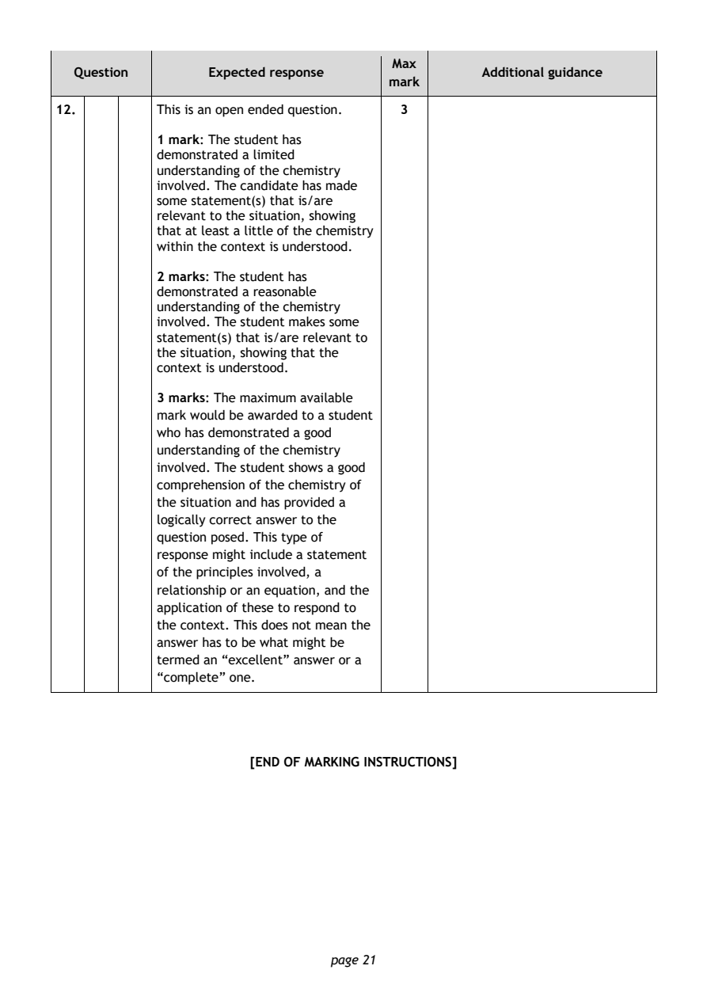
Selectable page text
Max
Question Expected response Additional guidance
mark
12. This is an open ended question. 3
1 mark: The student has
demonstrated a limited
understanding of the chemistry
involved. The candidate has made
some statement(s) that is/are
relevant to the situation, showing
that at least a little of the chemistry
within the context is understood.
2 marks: The student has
demonstrated a reasonable
understanding of the chemistry
involved. The student makes some
statement(s) that is/are relevant to
the situation, showing that the
context is understood.
3 marks: The maximum available
mark would be awarded to a student
who has demonstrated a good
understanding of the chemistry
involved. The student shows a good
comprehension of the chemistry of
the situation and has provided a
logically correct answer to the
question posed. This type of
response might include a statement
of the principles involved, a
relationship or an equation, and the
application of these to respond to
the context. This does not mean the
answer has to be what might be
termed an “excellent” answer or a
“complete” one.
[END OF MARKING INSTRUCTIONS]
page 21